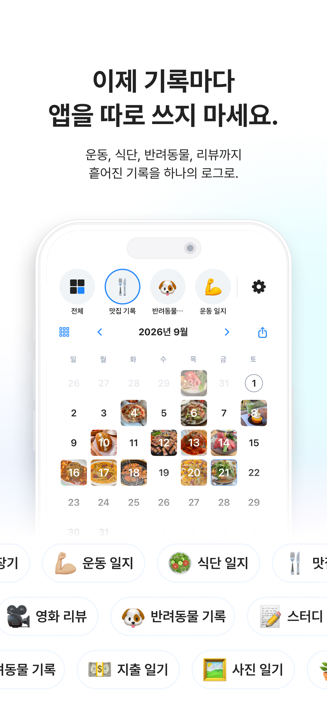
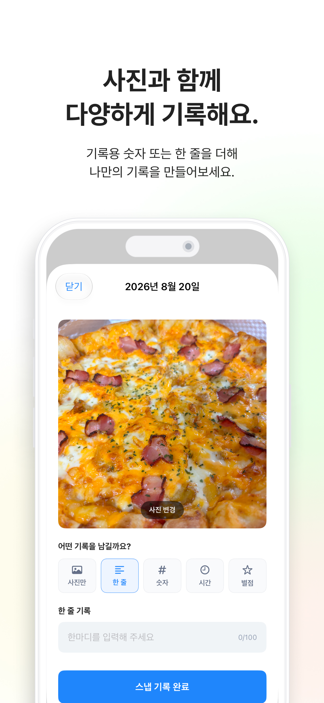
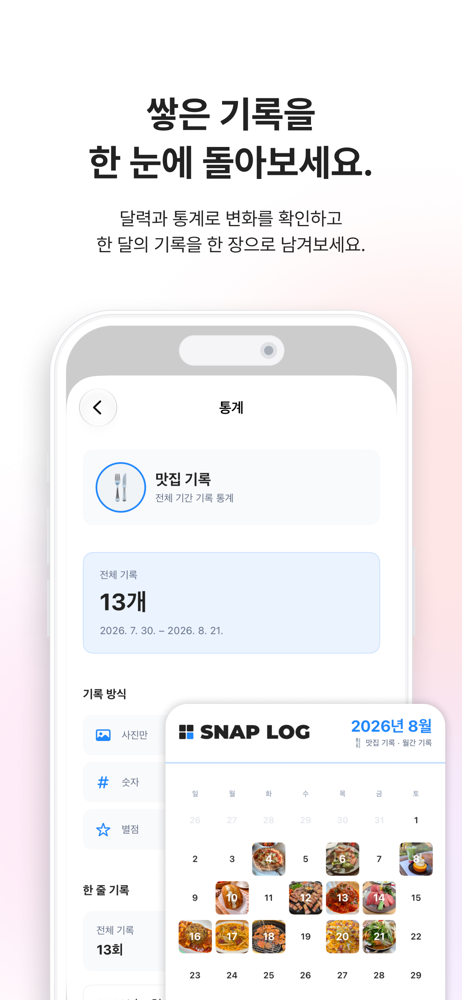
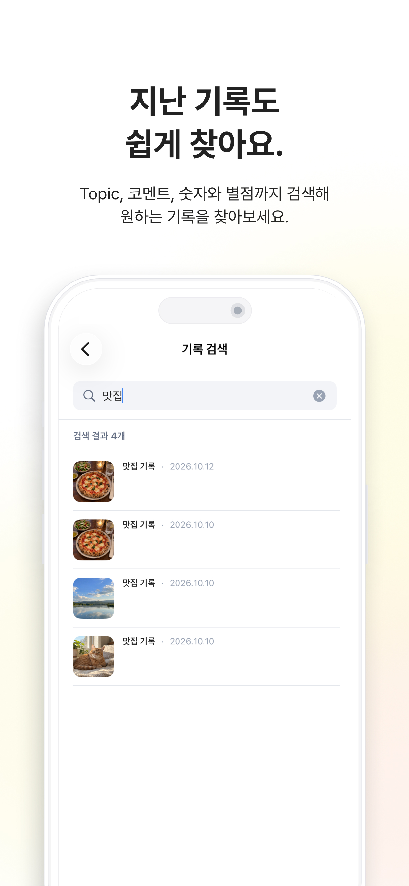
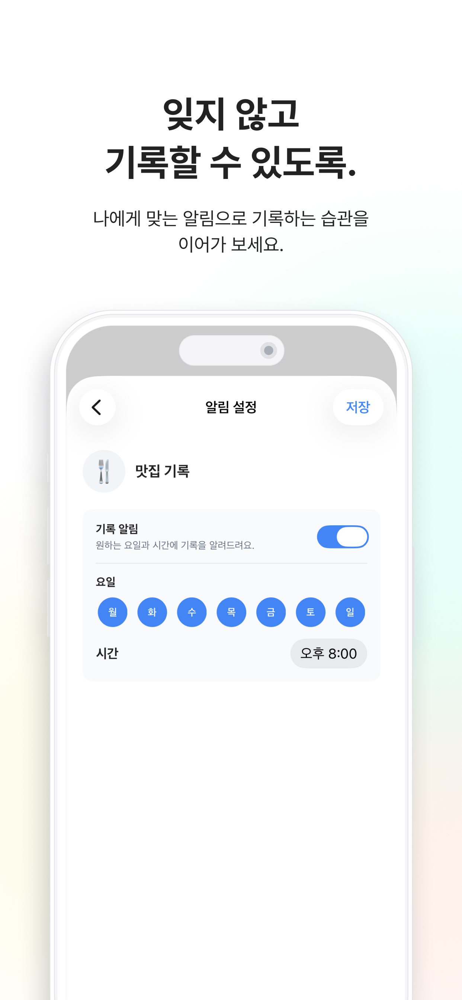

SnapLog
흩어진 기록을 하나의 로그로
미리보기





흩어진 기록을 하나의 로그로.
운동, 식단, 반려동물, 취미, 일상까지. 여러 앱에 나뉘어 있던 기록을 이제 SnapLog 하나에 모아보세요.
SnapLog는 사진 한 장과 숫자 또는 짧은 코멘트로 다양한 일상의 기록을 간편하게 남길 수 있는 기록 앱입니다.
원하는 주제로 자유롭게 기록하세요
운동, 식단, 체중, 반려동물, 취미, 영화, 일상 등 원하는 주제를 만들고 각각의 기록을 한곳에서 관리할 수 있어요.
사진과 함께 간단하게
사진 한 장에 숫자 또는 짧은 코멘트를 더해 빠르게 기록할 수 있어요.
달력으로 한눈에
날짜마다 쌓인 사진을 달력에서 한눈에 확인하고 지난 기록을 자연스럽게 돌아볼 수 있어요.
기록한 변화는 통계로
기록한 Snap은 월별 통계로 확인할 수 있어요.
한 달의 기록을 한 장으로
월간 기록을 이미지로 만들어 저장하거나 공유할 수 있어요.
업데이트 기록
2026.10.15
iOS · Android
2026.10.09
Android v1.1 · 지난 기록을 더 쉽게
Topic과 코멘트, 숫자와 별점까지 검색해 원하는 기록을 빠르게 찾을 수 있어요. 월간 리캡과 기록 알림도 더해 한 달의 순간을 돌아보고 꾸준히 기록하기 편해졌습니다.
2026.10.08
iOS v1.7 · 지난 기록을 쉽게 찾아요
전체 기록 검색을 추가해 Topic, 코멘트, 숫자와 별점으로 원하는 Snap을 빠르게 찾을 수 있어요. 기록을 다시 살펴보고 이어 남기는 흐름도 더 자연스럽게 다듬었습니다.
2026.10.05
Android v1.0.0 · 기록의 시작
이제 Android에서도 SnapLog를 만나보세요. 사진과 간단한 기록을 주제별로 모으고, 달력과 통계로 돌아보거나 월간 이미지를 저장할 수 있어요.
2026.09.30
iOS v1.6 · 한 달의 기록을 한눈에
한 달 동안 남긴 기록을 월간 리캡으로 돌아보고, 전체 기록과 Topic별 순간을 좌우로 넘겨볼 수 있어요. 앱 아이콘을 길게 눌러 카메라를 바로 열고, 며칠간 기록이 없을 때는 가벼운 알림을 받을 수 있습니다. Pro 연간 플랜 안내와 사용성·안정성도 함께 개선했습니다.
2026.09.24
iOS v1.5 · 기록을 더 가까이
첫 Topic부터 첫 Snap, 알림 설정까지 더 자연스럽게 이어지도록 다듬었어요. Pro 가격 안내를 더 보기 쉽게 개선하고, 숫자 기록에 음수 값도 입력할 수 있게 했습니다. 사용성과 안정성도 함께 개선했습니다.
2026.09.17
iOS v1.4 · 사진의 순간을 더 정확하게
앨범 사진에 촬영 시각 정보가 있으면 ‘시간’ 기록을 선택할 때 실제 촬영 시각이 자동 입력돼요. 사진이 있는 날의 달력 날짜 숫자를 숨길 수 있고, 전체 기록 포커스뷰와 썸네일뷰도 더 보기 편하게 다듬었습니다.
2026.09.12
iOS v1.3 · 여러 기록을 한 번에
한 장의 사진에 코멘트, 숫자, 시간, 별점을 함께 기록할 수 있게 되었어요. iCloud 동기화와 Topic 탐색, 복수 기록 통계도 함께 개선했습니다.
2026.09.04
iOS v1.2 · 모든 기록을 한눈에
모든 Topic을 한눈에 보는 전체 보기를 추가하고, 기록 입력을 더 자유롭게 개선했습니다. Pro에는 새로운 Autumn 컬러가 추가되었습니다.
2026.08.29
iOS v1.1 · 기록을 더 편하게
SnapLog Pro가 추가되고, 알림·다국어·통계·내보내기·iCloud 동기화 기능이 개선되었습니다.
2026.08.26
iOS v1.0 · 기록의 시작
사진과 간단한 기록, 주제별 관리, 달력, 통계, 월간 이미지 저장 기능으로 SnapLog를 처음 출시했습니다.